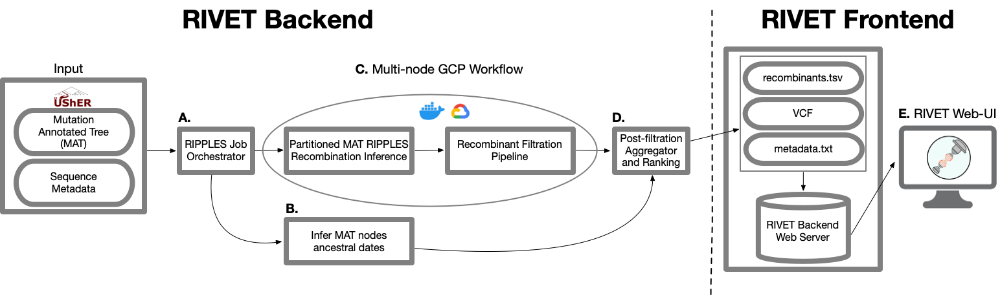
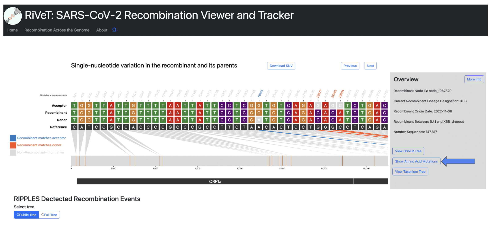

Welcome to the RIVET Wiki
RIVET is a software pipeline and visual web platform to perform SARS-CoV-2 recombination inference using RIPPLES and organize the relevant information in order to greatly accelerate the process of identifying and tracking SARS-CoV-2 recombinants.
RIVET Video Tutorial
RIVET Architecture
RIVET is a program designed to aid in SARS-CoV-2 recombination analysis and consists of backend and frontend components:
1. Backend: RIVET's backend pipeline uses RIPPLES for recombination detection in a mutation-annotated tree and has a subsequent automated filtration pipeline to flag potential false-positives resulting from bioinformatic, contamination or other sequencing errors. Next, the recombination results are ranked and additional results/metadata files are generated by the RIVET backend pipeline that can be loaded by the RIVET frontend.
2. Frontend: The RIVET frontend is an interactive, web-browser interface for online visualization, tracking, and analysis of recombination detection results.

Web Interface Walkthrough
Selecting Recombinant of Interest
Each row in the results table represents an inferred recombinant. You can horizontally scroll to the right to view more columns in the table, and click a row to select the recombinant you are interested in visualizing.
For detailed information on each column of the results table, please see the RIVET Results Table page.
Results Table Next and Previous Buttons
Use the next and previous buttons shown below to skip to the next recombinant result (next row) and SNV visualization in the table.

Tip
You can also use the arrow keys instead of the next and previous buttons. Use the right arrow key  and left arrow key
and left arrow key  to skip to
to skip to next and previous results respectively.
Sort by Column
The results can be sorted by any column, by clicking on the column title, shown below:

Note
By default, the results are ranked by the Recombinant Ranking Score.
Search Table
The table can be searched and the results shown will be filtered down based on the given query. For example, if you want to search for all recombinant results with XBB lineage classification just type XBB into the search bar.
Search by Sample ID
A user can search for recombinant ancestry in specific samples by using the search by sample identifer feature. Click the toggle button to its active state, and then enter the sample identifier into the search bar. When the Search by sample toggle is active, normal table search will be disabled and all search queries should be sample identifiers.
Note
Once you have entered the sample identifier into the search bar, it may take a few seconds for the table results to refresh with the results of your query.
SNV plot
When a user clicks on a row to select a recombinant of interest the following visualization, shown below, will be rendered.

The above visualization shows all of the single-nucleotide variant (SNV) sites in the recombinant sequence and its two parents (donor/acceptor), with respect to the reference sequence. The recombinant-informative sites are highlighted in orange where the recombinant matches the donor, and blue where the recombinant matches the acceptor. The gene region annotations are shown below the trio sequences in the bottom track.
Query Descendants
For a selected recombinant ancestor node of interest, you might want to query which samples are descendants of this inferred recombinant. Simply click the Recombinant label to the left of the track to view up to 10,000 sample descendants of that particular recombinant, as seen in the screenshots below.
You can also click the Donor and Acceptor labels to query the samples that are descendants of those particular parental nodes.
The side panel will display the 10,000 sample descendants by default, and you can click the Download Descendants button to download a .txt file containing all sample descendants for the selected trio node. (one per line)

Taxonium View
View trio sequences (recombinant/donor/acceptor) in Taxonium/Treenome Global Phylogeny.
Note
The Taxonium view feature is currently only available for public tree results.

The Recombinant/Donor/Acceptor nodes are circled in the global tree. Click the magnify button shown in the image below to zoom into the particular node of interest.

View UShER Subtree
This feature will take you to the UCSC UShER tool, where you can view the tree using UShER. This feature will automatically sample 10 descendants from the recombinant node in order to view the subtree.
Warning
This feature will open a new tab to UShER and may take a few minutes to load in the new tab.
Once finished loading, you will see the following page, where you can view the subtree by clicking view downsampled global tree in Nextstrain.

Recombinant Detailed Overview
To view more even more detailed information about a particular recombinant of interest click the More Info button in the Overview section.

This will display the following information:
- Current Recombinant Lineage
- Recombinant Origin Date (as inferred by Chronumental)
- Recombinant parental lineages
- Number of sequences descendant from this recombinant
- Earliest descendant sequence
- Most recent descendant sequence
- Countries where descendant sequences have been detected
- Quality Control Checks not passing (otherwise PASS if all QC checks pass)

Question
If there is additional information you would like to know for a particular recombinant of interest, please make this suggestion through a GitHub Issue in our repository.
View Amino Acid Sites
This option shows the amino acid mutations matched with their corresponding nucleotide mutation positions. This feature uses matUtils summary --translate, which is built automatically into the RIVET backend pipeline. In short, matUtils provides a method to compute the correct amino acid translations at each node in the tree, which RIVET uses to obtain the amino acid mutations for a given recombinant ancestor node.
For more information on this method, please see the following matUtils documentation.

All coding amino acid translations are annotated above each corresponding SNV position (if any).

RIVET Results Table
Each of the sections below describes the columns of RIVET's results table of inferred recombinant ancestors.
Recombinant Node ID
- UShER assigned node id for inferred recombinant node
Donor Node ID
- UShER assigned node id for donor (recombinant parentental node)
Acceptor Node ID
- UShER assigned node id for acceptor (recombinant parentental node)
Breakpoint 1 Interval
- RIPPLES inferred breakpoint interval 1
Breakpoint 2 Interval
- RIPPLES inferred breakpoint interval 2
Info
For more information on the RIPPLES algorithm, please see: Pandemic-scale phylogenomics reveals the SARS-CoV-2 recombination landscape
Recombinant Clade
- Recombinant clade classification as assigned by
Nextstrain
Recombinant Lineage
- Recombinant lineage designation as assigned by
Pangolin
Donor Clade
- Donor clade classification as assigned by
Nextstrain
Donor Lineage
- Donor lineage designation as assigned by
Pangolin
Acceptor Clade
- Acceptor clade classification as assigned by
Nextstrain
Acceptor Lineage
- Acceptor lineage designation as assigned by
Pangolin
Chronumental-inferred origin date
- Inferred first emergence of recombinant ancestor sequence using the Chronumental method, which runs automatically as part of the
RIVETpipeline. In short,Chronumentalis a accurate and scalable time-tree estimation method that uses stochastic gradient descent to estimate lengths of time for tree branches under a probabilistic model. For more information on this method, please see the Chronumental paper.
Recombinant Ranking Score
- The ranking score represents a growth score that we compute for each inferred recombinant, which is designed to help prioritize recently emerging recombinants and recombinants with many descendant circulating sequences.
-
By default, we order the main
RIVETresults table by maximum ranking score, which attempts to prioritize highest concern recombinants of interest at the top of the list.The recombinant growth metric below, G(R), for a recombinant node with a set of descendants S is defined below:
- In the equation above, and correspond to the number of months (30-day intervals) ùëö(ùëÖ) ùëö(ùë†) elapsed since the recombinant node was inferred to have originated and its descendant ùëÖ sequence was sampled, respectively. The growth score above, G(R), is computed for each detected recombinant R, and the final recombinant list is ranked based on descending growth scores.
Representative Descendant
- This selected sample is a descendant with the fewest additional mutations as compared to it's recombinant ancestor.
Informative Site Sequence
- The informative site sequence is a binary string of
AandBfor each trio sequence, where anAis assigned if the recombinant node allele at the site matches only the donor node allele at that site, or aBif the recombinant matched only the acceptor.
3SEQ (M, N, K)
- 3SEQ M, M, K values used to check individual p-values in a pre-generated 3SEQ p-value table.
3SEQ P-Value
Info
For more information on the 3SEQ method and its use in RIPPLES, please see Improved Algorithmic Complexity for the 3SEQ Recombination Detection Algorithm and the Supplementary Section of Pandemic-scale phylogenomics reveals the SARS-CoV-2 recombination landscape
Original Parsimony Score
- The original parsimony placement score on the global phylogeny.
Parsimony Score Improvement
- Highest parsimony score improvement relative to original parsimony score.
Quality Control (QC) Flags
- This column represents quality control (QC) or filtration checks that where flagged, meaning that this inferred recombinant is not high-confidence and could represent a false-positive recombinant resulting from bioinformatic, contamination or other sequencing errors.
Info
For detailed description of each quality control and filtration check performed in RIVET's backend pipeline, see the Quality Control and Filtration Checks page.
Common sources of false positive errors in RIVET’s pipeline include, but are not limited to:
- Contamination, sequencing, or assembly errors in the recombinant or parent sequences
- Missing sequences resulting in artificially long branches in the UCSC public tree
- Misalignments or phylogenetic inconsistencies
Common sources of false negative errors in RIVET’s pipeline include, but are not limited to:
- Too few recombination-informative sites in the recombinant
- More than two breakpoints are required to explain the recombinant
- Too few descendants of the recombinant or its parent in the UCSC public tree
"Click to View" Taxonium
- When clicked, this button will open a separate tab launching the Taxonium browser in order to view the particular recombinant trio (recombinant/donor/acceptor) in the context of the global phylogeny. In short, Taxonium is a visualization tool for exploring large trees.
Quality Control and Filtration Checks
3SeqP02
- P-value from 3-seq > 0.2.
russPval005
- False-discovery rate (FDR) of the parsimony improvement > 0.05. (See Supplementary Text S3 of RIPPLES for details of the null model.)
Alt
- "Alternate": Other recombination trios with the same recombination node have more parsimony improvement, fewer possible breakpoint intervals, or better P-values.
cluster
- All recombination informative mutations occur within a span of 20 nucleotides.
redundant
- More than two of the recombination node, donor node, and acceptor node appear in that of another trios.
Informative_sites_clump
- More than 5 recombination-informative mutations in a 20-nucleotide span.
Suspicious_mutation_clump
- More than 6 mutations (or 3 near indels) in a 20-nucleotide span on any of the donor node, the aceptor node or the recombination node.
Too_many_mutations_near_INDELs
- Too many mutations on 100-nt spans near indels or a string of Ns.
Using RIVET for Other Pathogens
Below are two examples of using RIVET's backend pipeline to infer and visualize recombinants of other pathogens beyond SARS-CoV-2.
Warning
Currently, RIVET's backend QC/filtration pipeline is specific to SARS-CoV-2 and will not run when using the RIVET backend for other pathogens.
Human Respiratory Syncytial Virus (HRSV) Subgroup A
Below is the SNV visualization resulting from inferring a putative recombinant in an RSV mutation-annotated tree (MAT).

Since the SNV plot for RSV includes many sites, only the region up to around position 1000 is shown in the image above.
Please click the download button below to view the entire RSV SNV plot as an SVG image.
{kind=link}
Monkeypox Virus
Edit the following fields in the config.yaml file:
Change the GenBank file from the default SARS-CoV-2 file to the corresponding GenBank file for your pathogen of interest, Monkeypox virus in this case.
Warning
Make sure the environment field is set to local.
port at which RIVET will host the local HTTP server in your browser.
Now run the following command and RIVET will automatically open your browser to launch the frontend results table and SNV visualization.
python3 rivet-frontend.py -r recombination_mpxv.2023-07-01.tsv -v mpxv.2023-07-01.vcf -c config.yaml
Below is the SNV plot we get for one of the monkeypox virus inferred recombinants.

Check
For pathogens with larger genomes than SARS-CoV-2, you may want to change the step interval of genomic coordinate tick marks. This can be done by changing the tick_step field in RIVET frontend config.yaml file.
Use RIVET Locally
Installing RIVET Backend using Docker on Linux
Install
Install Docker on your machine first.
For ease of use, the entire RIVET backend pipeline, including recombinant ranking, is contained within a pre-built public docker image.
Running RIVET Backend Locally On Your Machine
A RIVET backend job can be run locally on your machine.
To launch a Docker shell, run the following two commands.
Docker shell with the necessary RIVET environment.
Type the following help command to ensure your RIVET backend environment is configured correctly.
The wget command-line utility for downloading files from the internet (the necessary MAT, metadata and sequence files required as input to RIVET) is included in the Docker environment. Proceed to the next steps for running a RIVET backend job: Inferring Recombinants Using the RIVET Backend.
Running RIVET Backend On Google Cloud
We also provide the build-in option of running a parallelized RIVET job across a user specified number of Google Cloud Platform (GCP) machines.
Setup
If you would like to use GCP, please see the following docs for setting up an account with Google Cloud Platform: GCP Setup Docs
Important
Put your GCP service account key file (obtained following the docs linked above) in the corresponding location as the command below or update the location in the command below:
To launch a Docker shell using GCP, run the following two commands providing your GCP Authentication keys file.
KEY=~/.config/gcloud/<key_file.json>
docker run -it -e GOOGLE_APPLICATION_CREDENTIALS=/tmp/keys/<key_file.json> -v ${KEY}:/tmp/keys/<key_file.json>:ro mrkylesmith/ripples_pipeline:latest
Install RIVET Frontend Locally On Your Machine
Clone RIVET Repo Locally
Conda Install
Install
Install Conda on your machine first.
All the RIVET frontend dependencies have been added to Conda environment setup, that can be found in the install directory.
Run the following commands to activate the rivet Conda environment.
Type the following command to ensure your RIVET frontend environment is configured correctly, and then proceed to the next steps for using the RIVET frontend: Visualizing Your Results Using the RIVET Frontend
Inferring Recombinants Using the RIVET Backend
Infer recombinant ancestry in your own SARS-CoV-2 sequences using RIVET's backend.
Installation
Make sure RIVET is installed on your local machine before proceeding.
RIVET Backend
The RIVET backend uses RIPPLES for SARS-CoV-2 recombination detection. For more information on the RIPPLES algorithm please see: Pandemic-Scale Phylogenomics Reveals The SARS-CoV-2 Recombination Landscape

RIVET Backend Architecture
A. RIPPLES Job Orchestrator
When running a RIVET job on Google Cloud Platform (GCP), RIVET calculates the number of long branches in the input mutation-annotated tree and partitions them across n GCP instances, which is a parameter specified by the user. This stage of the pipeline is responsible for setting up and launching these parallel jobs, as well as monitoring their progress as they run. This stage of the pipeline also initiates a Chronumental job, to run concurrently as a subprocess on the local machine, which is explained in the following part B.
B. Infer MAT nodes ancestral dates
In order to infer the emergence of detected ancestral recombinant nodes of interest for ranking and epidemiological prioritization, RIVET builds a time-tree using the Chronumental method. This method uses the sample dates provided in the sequence metadata file to build a probabilistic
model for length of time across branches in the tree and is able to infer the dates of all internal nodes in the tree. RIVET uses these dates for internal nodes that we label as recombinants.
C. Mult-node GCP Workflow
When running a RIVET job on GCP, the RIPPLES recombinant search and subsequent filtration pipeline utilizes multi-node parallelism. The degree of speedup depends on how many GCP instances the user decides to allocate towards the job, since the MAT long branches to search will be automatically partitioned across the given n machines. On each instance, once a putative list of recombinant nodes is obtained, the pipeline on that machine begins quality control and filtration checks to flag false-positive recombinants.
D. Post-filtration Aggegrator and Ranking
This is the last stage of the pipeline and it occurs on your local machine, for both on-premise and GCP RIVET workflows. Once the recombination search and filtration steps of the pipeline have concluded on all instances and the local Chronumental job has finished, the filtered recombinant results for each partition of long branches are aggregated locally and the post-filtration stage of the pipeline can begin. During this last step, the final list of recombinants is ranked according to a growth metric and also additional information on each recombinant is gathered, such as clade/lineage information, descendant samples, parsimony scores, quality control/filtration information, and more. For a full list of all information reported about each putative recombinant, please see our documentation about the RIVET Results Table
RIVET Backend Input
Warning
All input files should be placed in the current directory where you will launch your RIVET workflow.
If using GCP: The following input files with the same naming as you specify in the config.yaml file below need to be placed in your GCP Storage Bucket (bucket_id) before launching the remote RIVET job.
-
UShER Mutation-Annotated Tree (MAT): Updated daily and can be obtained here: SARS-CoV-2 global MATRIVETperforms recombination search usingRIPPLESover an UShER mutation-annotated tree (MAT). Any samples you wish to search for recombinant ancestry must first be added to theMATusing UShER.
-
Sequence Metadata: Also updated daily to match the sequences in the corresponding MAT and can be obtained here: metadata- The sequence metadata is a
TSVfile containing information about each sample in theMAT, including its name, date sequenced, country sequenced, and clade/lineage information. This information is used throughout theRIVETbackend pipeline, for inferring the recombinant ancestor emergence date for example.
- The sequence metadata is a
Sequence Files (FASTA):Downloadable at the following links, for a given$TREE_DATE(eg. 2022-07-04)https://hgwdev.gi.ucsc.edu/~angie/sarscov2phylo/ncbi.$TREE_DATE/genbank.fa.xzhttps://hgwdev.gi.ucsc.edu/~angie/sarscov2phylo/cogUk.$TREE_DATE/cog_all.fasta.xz
Info
During the RIVET backend quality control and filtration pipeline these sample sequence files are aligned to the SARS-CoV-2 reference and the RIPPLES inferred recombinantion-informative sites are inspected for bioinformatic and sequencing error quality issues to flag false-positive recombinants.
Example
To download the SARS-CoV-2 Genbank sequences for 2022-07-04:
Launch RIVET Job
The RIVET backend is setup to be run locally on your own machine or on Google Cloud Platform (GCP), and for ease-of-use is entirely configured through the use of the config.yaml file.
Setup
If you would like to run your RIVET backend job on Google Cloud Platform, please see the following documentation for setting up an account: GCP Setup Docs
Copy the config file from template/config.yaml into the current directory and fill out the fields. More information on each field can be found below.
# GCP Credentials [LEAVE EMPTY FOR LOCAL JOB]
bucket_id:
project_id:
key_file: /tmp/keys/
# GCP Machine and Storage Bucket Config [LEAVE EMPTY FOR LOCAL JOB]
instances:
boot_disk_size: 50
machine_type:
# Ripples Parameters Config [REQUIRED]
version: ripples-fast
mat:
newick:
metadata:
date:
# Local results output directory, or name of folder on GCP storage bucket
results:
reference: reference.fa
# Additional Parameters
num_descendants: 5
public_tree: True
verbose: False
# Default to all available threads if left empty
threads:
docker_image: mrkylesmith/ripples_pipeline:latest
generate_taxonium: False
Fill out the configuration file with the settings for your RIVET job. If the field is already filled in, you will likely not want to change that parameter value.
Info
For more information on each field in the config.yaml file please see the following page: RIVET Backend Configuration
RIVET Backend Outputs
The pipeline will create a local results directory, based on the name given for the results field in config.yaml
The pipeline will automatically output the following four files within your local results directory (and in GCP bucket if running remote job):
final_recombinants_<DATE>.txt: aTSVfile containing the detected recombinants, with the recombinant node id, donor node id and acceptor node id as the first three columns in the file. The rest of the columns contain information about each detected recombinant, including clade/lineage assignments, 3SEQ M,N,K and p-values, a representative descendant (containing the fewest additional mutations with respect to the recombinant node), recombinant ranking scores, and other information to be displayed by the RIVET frontend. For more information on this file, please see the RIVET Results Table page.
trios.vcf: VCF file containing the SNVs of each trio (recombinant and its parents) node.
sample_descedants.txt.xz: aTSVfile where each row contains a mapping from each trio node id (one node id per row), to a set of descendant samples corresponding to that internal node id.
<DATE>.taxonium.jsonl.gz: a jsonl file used by RIVET frontend to display the recombinant node trios within the context of the global phylogeny, powered by Taxonium and Treenome.
Note
Currently the Taxonium view is only provided using public trees provided at: https://hgdownload.soe.ucsc.edu/goldenPath/wuhCor1/UShER_SARS-CoV-2/
Visualizing Your Results Using the RIVET Frontend
Install
Make sure you have installed the RIVET frontend on your machine before proceeding.
Note
If you are using the RIVET frontend to visualize recombinants for pathogens other than SARS-CoV-2, please see the Using RIVET for Other Pathogens page.
Configuration
RIVET's frontend settings can be configured using the provided YAML file, config.yaml.
# Configuration file for RIVET
### Color Schema Options ####
# Base coloring
a: '#cc0000'
g: '#cc7722'
c: '#57026f'
t: '#338333'
base_matching_reference: '#dadada'
reference_track: '#333333'
# Recombinant-Informative Coloring for polygons/position column labels
recomb_match_acceptor: '#2879C0'
recomb_match_donor: '#F9521E'
non_informative_site: '#dadada'
# Breakpoint Intervals
breakpoint_intervals: '#800000'
# Genomic Coordinate Track (default all genomic regions are same color)
genomic_regions: '#33333'
# Step for tick-marks on genomic coordinate track
tick_step: 1000
# Pathogen
ref_seq: NC_045512.gb
### Taxonium Tree View Options ###
date: 2023-01-31
bucket_name: public_trees
# Keep environment as "local"
environment: local
# If running locally, port to use
port: 2000
Warning
When running RIVET locally, don't change the environment field. Also, it won't be necessary to change the date field or bucket_name field.
Run the following command to launch the RIVET frontend in your local browser.
Example
Try the following example using example SARS-CoV-2 recombinants provided in the example/ directory.
python3 rivet-frontend.py -r example/final_recombinants_example.txt -v example/trios_example.vcf -c config.yaml
Required Inputs
-f, RECOMBINANT_RESULTS: Input text file containing inferred recombinant nodes. First three columns in this text file must contain (1) recombinant node ID\t (2) donor node ID\t (3) acceptor node ID. Note, donor and acceptor denote the two parental nodes of the inferred recombinant.
Expected format:
| Recombinant Node ID | Donor Node ID | Acceptor Node ID |
|---|---|---|
| node_1156861 | node_1155169 | node_1167556 |
| node_1067629 | node_1021823 | node_1156861 |
Additional columns can be provided optionally and will be included in the rendered results table, but are not required.
Note
The RIVET backend will automatically generate the necessary input files above. Follow the steps listed on the Inferring Recombinants Using the RIVET Backend page. However, the RIVET frontend can also be used independently of the backend, just ensure that the input files adhere to the expected formatting.
-v, VCF: An input VCF containing single-nucleotide variants (SNVs) of all recombinant/donor/acceptor trio nodes present in the input RECOMBINANT_RESULTS file.
Note
RIVET only supports viewing single-nucleotide variants (SNVs), and not indels or SVs. Please see the following workflow to create a VCF for uploading to RIVET locally.
-c, CONFIG: The config.yaml file, shown at the top of this page, and provided in the repository.